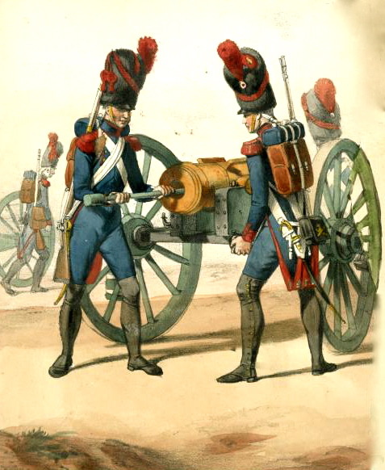
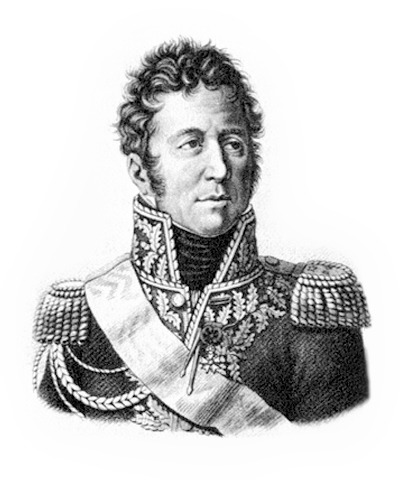
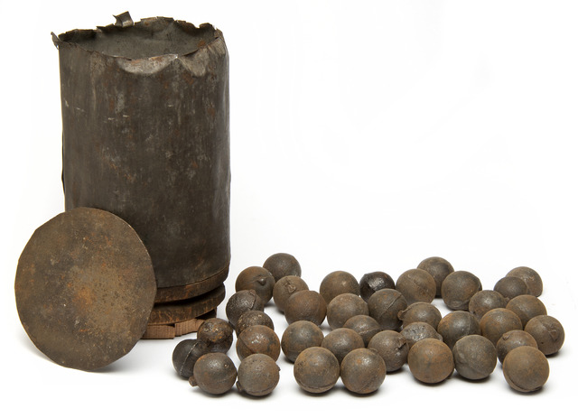
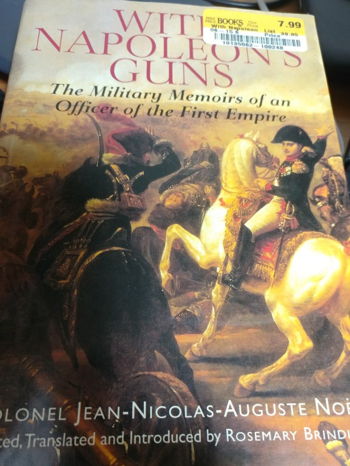

바그람 전투 (제12편) - 불과 쇠
게시: 2017-08-27T20:44:46+09:00
베시에르, 아니 낭수티가 지휘하는 프랑스군 기병집단으로 하여금 포병과 보병, 기병이 고슴도치처럼 대비를 하고 있는 오스트리아군 진영으로 돌격하도록 나폴레옹이 명령한 것은 기병대의 위력을 믿었기 때문이 아니었습니다. 그건 어디까지나 시간을 벌 목적 뿐이었지요. 전쟁터에서 시간이란 수천명의 병사들을 희생시키더라도 벌 만한 가치가 있는 것이긴 했습니다. 하지만 나폴레옹은 과연 무엇을 하기 위한 시간을 벌려고 했던 것일까요 ? 어차피 마세나의 군단을 남쪽 에슬링으로 떠나 보내고나면 당장 무너져내리는 아더클라 방면 전선을 막아줄 병력은 존재하지 않았습니다. 정확하게는 주변에 병력이 있긴 했습니다. 바로 나폴레옹이 최후의 비상 수단으로 아끼고 아끼던 근위대가 있었지요. 그러나 나폴레옹 같은 대인배에게 있어서, 당시의 상황은 근위대를 끌어다 쓸 만큼 위급한 상황이 아니었습니다. 그저 시간만 조금 더 끌면 다부가 이끄는 프랑스군의 라이트 훅으로 충분히 이길 수 있는 전투라고 그는 판단하고 있었습니다.
하지만 기병대는 충분히 긴 시간을 버텨줄 만한 병종이 아니었고, 나폴레옹은 시작하기 전부터 그 사실을 잘 알고 있었습니다. 기병대를 냅다 집어던진 것은 시간을 끌어줄 어퍼컷을 날리기 전에 날린 잽에 불과했습니다. 그렇다면 어퍼컷으로 날릴 것으로 나폴레옹은 무엇을 준비하고 있었던 것일까요 ?
여기서 나폴레옹은 당대에 보지 못한 기발한 전술을 펼칩니다. 제대로 된 군단 대신, 강력한 포병 화력을 동원하여 눈 앞의 오스트리아군을 제압하기로 한 것입니다. 이는 그가 포병 출신이기 때문에 해낸 생각이기도 했고, 프랑스 포병대의 실력을 믿고 잘 이해했기 때문이기도 했습니다만, 근본적으로 이는 나폴레옹의 군사적 천재성이 빛났기 때문에 가능한 도박이었습니다. 만약 이렇게 포병만으로 적의 대군을 막아낼 수 있다면 왜 전에 다른 곳에서는 그런 전술을 펼치지 않았겠습니까 ? 그 짧은 시간, 그 험악한 위기 속에서도 나폴레옹은 당장 눈 앞에 펼쳐진 지형과 오스트리아군의 포진을 치밀하게 관찰하고 있었습니다. 그 일대는 약간의 높낮이로 인해 시야로부터 가려지는 움푹한 지대도 없는 정말 완전한 평야 지대여서 적이 항상 포병의 사선에 노출되어 있었고 지면도 탄탄한 곳이었습니다. 당시 포병대의 주력 탄종인 구형탄(roundshot)은 직격으로 말과 사람을 으스러뜨리기도 했지만 그보다는 먼저 얕은 각도로 대지 위에 한번 떨어진 뒤 퉁퉁 튕겨 날아가며 그 비행 경로 상에 있는 모든 것을 부러뜨리는 경우가 더 많았습니다. 나폴레옹의 친구인 란 원수도 이런 포탄에 목숨을 잃었지요. 즉, 오스트리아군이 진격해오고 있는 아더클라 남쪽 평원은 포병의 살상 효과를 100% 발휘할 수 있는 곳이었습니다. 이 점을 파악한 나폴레옹은 이 지역을 포병으로 제압하기로 합니다.

(프랑스 근위 포병대의 12-파운드 포 및 그 포병들입니다. 다만 바그람 전투 현장에서 동원된 것은 주로 6-파운드 및 8-파운드 포대였고, 일부 있던 12-파운드 포병들은 프랑스 근위대가 아니라 브레더 장군 휘하의 바이에른군 소속 포병들이었다고 합니다. 당시 포병은 나름 엘리트 부대로서, 급료도 보병보다 약간 더 높았고 심지어 기병보다도 다소 높았습니다. 오스트리아군에서조차, 보병은 징집했지만 포병은 모두 자원병으로 구성되어 있었고, 보병의 복무 연한이 6년인 것에 비해 포병은 14년이었습니다. 그만큼 숙련도가 중요한 당대 최첨단 병과였습니다.)
이를 위해 그는 황실 근위대의 대포 60문 전체와 외젠이 끌고 온 이탈리아 방면군의 대포 38문, 그리고 브레더(Karl Philipp von Wrede) 장군의 바이에른군에 소속된 24문의 대포를 차출하여 임시로 대(大) 포병단(la grande batterie)을 급조할 것을 명했고, 그 지휘관으로는 이탈리아 방면군 소속이던 로리스통(Jacques Alexandre Bernard Law, marquis de Lauriston) 장군을 선발했습니다. 로리스통 장군은 1800년부터 나폴레옹 밑에서 복무한 전형적인 포병 전문 지휘관이었는데, 아스페른-에슬링 전투에서 프랑스 포병을 책임지던 수석 포병 지휘관 송기(Nicolas-Marie Songis des Courbons) 장군이 최근 1달 사이 급격히 건강이 나빠져 프랑스로 귀국했기 때문에 당시 현장에서는 포병 병과로는 가장 믿을 만한 지휘관이었습니다.

(로리스통 장군입니다. 이 분의 본명은 Jacques Alexandre Bernard Law로서, 로리스통이라는 이름은 뒤에 붙여진 marquis de Lauriston, 즉 로리스통 후작이라는 작위명에서 비롯된 것입니다. 프랑스인의 성씨가 로 Law 라니 좀 이상하지 않습니까 ? 이 분도 막도날처럼 스코틀랜드 집안 출신이었습니다. 스코틀랜드 출신으로 프랑스에 자리를 잡은 Law라는 성씨라... 어디서 들은 기억 안 나십니까 ? 예, 맞습니다. 프랑스 중앙은행의 전신이라고도 할 수 있는 Banque Générale를 세우고 종이 돈을 대량으로 찍어냈다가 결국 미시시피 주식회사 거품을 일으켜 프랑스 재정을 파탄으로 몰아 넣은 바 있는 존 로 John Law 바로 그 사람의 조카입니다. 로리스통은 프랑스령 인도 퐁디셰리에서 태어났습니다. 당시 아버지가 거기 총독이었거든요.)
낭수티의 프랑스 기병대가 너덜너덜해진 채 퇴각하자, 콜로브라트의 오스트리아 제3 군단과 리히텐슈타인 대공의 오스트리아 예비 군단이 그 뒤를 쫓아 서서히 진격하기 시작했습니다. 그 앞을 가로 막은 것은 프랑스 기마 포병대의 대포 몇 문 뿐이었습니다. 그 정도의 저항은 충분히 예상했던 오스트리아군은 자신있게 계속 전진해 나갔습니다. 그렇게 펑 펑 몇 방씩 쏟아지는 대포알을 견디며 나아가는 오스트리아군이 보는 가운데, 프랑스 포병들의 수가 점점 늘어나기 시작했습니다. 덜커덩 거리는 포가와 탄약차를 끌고 온 프랑스 포병들은 띄엄띄엄, 그러나 매우 빠른 속도로 도착하여 1열 횡대로 전개했는데, 오스트리아군이 '어어 저것들 봐라' 하는 사이에 어느 덧 122문의 대포들이 방열을 마쳤습니다. 무려 2km에 걸친 일렬 횡대였지만 대포의 수가 너무 많다보니, 그러다보니 불과 16m 당 1문씩, 오스트리아군의 전면을 전혀 빈틈없이 대포로 빽빽히 도배질을 한 셈이었습니다.
이렇게 방열을 마친 프랑스 포병들이 옆 포대와 경쟁이라도 하듯 포격을 시작하자 오스트리아군은 크게 흔들릴 수 밖에 없었습니다. 오스트리아군은 전진을 위해 빽빽한 밀집 대형으로 행군 중인 상태였으므로 이런 포격은 한발 한발이 큰 피해를 입혔습니다. 어떤 경우에는 퉁퉁 튕겨 날아드는 대포알 한발에 20명이 허리가 잘리고 정강이가 꺾여 한꺼번에 쓰러졌습니다. 프랑스 포병들은 오스트리아군 선두로부터 약 300m ~ 500m 떨어진 곳에 방열을 하고 포격을 시작했는데, 오와 열을 맞춰 행군해야 하는 전투 현장에서 이 정도의 거리는 약 6~8분 걸리는 거리였습니다. 당시 프랑스 포병들이 쓰던 6파운드 또는 8파운드 포는 숙련된 포병들의 경우 1분에 1발 꼴로 사격이 가능했으므로, 오스트리아군이 머스켓 소총 사거리까지 접근하기 전에 대략 6~8발의 사격이 가능했습니다. 실제로는 훨씬 더 많이 쏘았습니다. 전면에 16m 간격으로 늘어선 대포들이 이렇게 토해내는 쇳덩어리의 공포로 인해 오스트리아군 보병들이 주춤거릴 수 밖에 없었고, 또 신이 난 프랑스 포병들의 재장전 속도가 평소보다 더 빨랐던 것입니다. 프랑스 포병들은 오히려 대포를 조금씩 전진시키며 포격을 가했는데, 여기에는 이유가 있었습니다. 오스트리아군이 머스켓 소총 사거리 근처까지 접근하자 프랑스 포병들은 한방에 수십명을 피떡으로 만들 수 있는 산탄(canister)을 쏘기 시작했고, 그 앞에 있던 오스트리아군은 그야말로 산산조각이 나버렸습니다.

(이건 미국 남북전쟁 당시의 산탄, 즉 canister shot입니다. 통조림을 가리키는 영어 can은 저런 금속제 용기인 canister의 줄임말입니다.)
오스트리아군도 포병을 동원하여 대(對) 포병 포격전을 펼쳤습니다. 그러나 프랑스군의 포병대가 워낙 수적 우세를 점하고 있었기 때문에 오스트리아군의 포병대는 빠른 속도로 무력화되어버렸습니다. 그러나 프랑스군 포병대도 결국 꽤 심각한 피해를 입었습니다. 아무리 산탄을 쏜다고 해도 눈 앞의 오스트리아 보병들을 100% 모두 쓰러뜨릴 수는 없었기 때문에, 살아남은 적병들이 쏘아대는 머스켓 총탄에 많은 포병들이 쓰러졌고, 거기에 더해 저 멀리 1km가 넘는 바그람 언덕 위에 설치된 12파운드짜리 오스트리아군의 중포들에서 날아오는 포탄들이 큰 피해를 입혔습니다. 이 전투에서 프랑스군 포병대는 무려 476명의 사상자를 냈는데, 하나의 대포에 대략 20명의 포병이 딸려 있었으니 전체로 볼 때 거의 20%의 사상율이었습니다. 당시 포병들은 현대전과는 달리 거의 보병들처럼 최전선에서 싸웠다는 것을 감안하더라도 포병치고는 예외적으로 높은 사상율이었습니다. 나폴레옹은 근위 포병대의 피해가 점점 커지고 있다고 보고를 받자 그의 근위대 보병들에게 쓰러진 포병 전우들의 자리를 메워줄 자원병을 뽑겠다고 즉석에서 외쳤는데, 필요한 보충병의 2배가 넘는 근위대 병사들이 자원했다고 합니다. 결국 프랑스 포병대는 치열한 포격을 계속 해나갈 수 있었고, 각 대포당 평균 200발 정도를 발사할 정도로 뜨거운 포격전이 벌어졌습니다. 이런 불과 쇠의 폭풍 앞에서 오스트리아 제3 군단의 진격은 완전히 와해되었고, 콜로브라트나 리히텐슈타인도 일단 후퇴를 택할 수 밖에 없었습니다. 오스트리아군은 거미새끼처럼 흩어져 아더클라 마을 건물 속으로 숨어들었고, 그 빈자리를 채우기 위해 벨가르드 장군이 3개 포대 18문의 대포를 내세워 반격을 해보았으나, 이 역시 곧 꼬리를 말아쥐고 마을 건물 뒤로 철수해야 했습니다.
사상 초유의 이 웅대한 포병 작전은 그 우렁찬 포성을 바그람 주변의 전장은 물론 비엔나까지 퍼지게 했습니다. 당시 우익인 다부 쪽을 지원하고 있던 이탈리아 방면군 소속 포병 노엘 대위(Jean Nicolas Auguste Noel)은 회고록에 이렇게 적었습니다.
'당시엔 전황을 알 수 없었으나 좌익 쪽에서 엄청난 포격 소리가 들려왔다. 이번 전투의 운명이 그 쪽 방면에서 결정되는 것이 확실했고, 황제께서도 그 쪽에 계신 것이 틀림없었다.'
그러나 노엘 대위가 스스로 인정하듯이, 그는 전황이 어떻게 돌아가는지 정확히 알지 못했습니다. 전투의 운명은 바그람 주변이 아니라 바로 자신이 있던 우익, 즉 마르크그라프노이지들 방면에서 결정되게 되어 있었습니다.

(제가 2015년 텍사스 오스틴에 몇 개월 출장가 있을 때 그쪽 헌책방에서 산 책입니다. 그때 사온 책 아직 거의 시작도 못하고 있습니다. 반성합니다.)
Source : The Reign of Napoleon Bonaparte by Robert Asprey
With Napoleon's Guns by Jean-Nicolas-Auguste Noel
http://www.historyofwar.org/articles/battles_wagram.html
https://en.wikipedia.org/wiki/Battle_of_Wagram
http://www.napolun.com/mirror/napoleonistyka.atspace.com/Battle_of_Wagram_1809.htm#battleofwagram94
http://www.histoire-empire.fr/articles/item/grande-batterie-wagram.html
https://en.wikipedia.org/wiki/Grande_Arm%C3%A9e#Foot_artillery